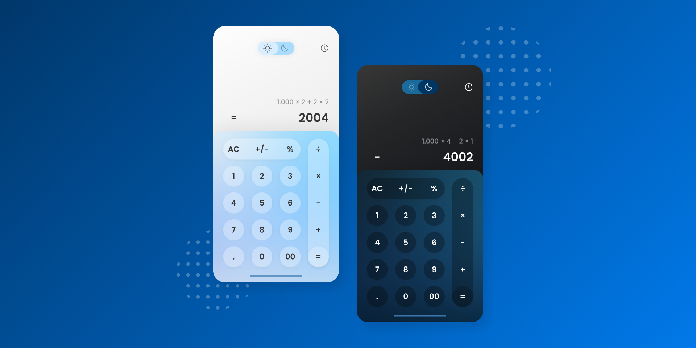
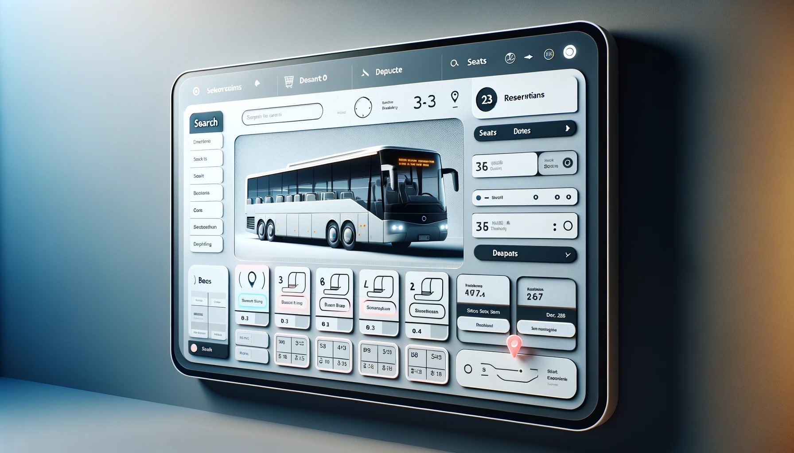

Online Banking System project is a web application which is developed in Java Servlet platform.It is developed using jsp,css,html and Database access.This is simple and basic level small project for learning purpose.

Online Grocery Shop System designed in Spring Boot and Hibernate.This project is designed to automate the process of a Grocery Shop thereby, easing the process of managing it and keeping records of every single detail related to the shop.

Responsive Calculator is designed in HTML CSS & JavaScript. This calculator will do every calculation like division, multiplication, addition, subtraction, and many more..

The Ticket Booking System program that can book tickets in a digital way. This Ticket Booking System Project was only developed using Python Programming language.The user can access the system freely by just entering certain keys. The user can add a customer name, view PNR status, and generate the total booked ticket.
© 2024 Your Ch.Prabhakar. All rights reserved.